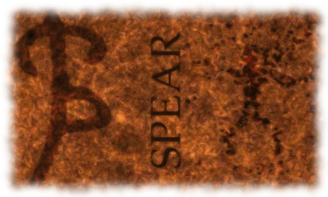

|

SPEAR Stochastic Process Estimation for AGN Reverberations |
|
Introduction: SPEAR is a new approach to reverberation mapping that computes the lags between the AGN continuum and emission line light curves and their statistical confidence limits. It uses a damped random walk model to describe the quasar continuum variability and the ansatz that emission line variability is a scaled, smoothed and displaced version of the continuum. While currently configured only to simultaneously fit light curve means, it includes a general linear parameters formalism to fit more complex trends or calibration offsets. The noise matrix can be modified to allow for correlated errors, and the correlation matrix can be modified to use a different stochastic process. The transfer function model is presently a tophat, but this can be altered by changing the line-continuum covariance matrices. It is also able to cope with some problems in traditional reverberation mapping, such as irregular sampling, correlated errors and seasonal gaps. Documents: For a thorough description of the underlying statistics and physics, please see Zu et al. 2010. A local copy can be obtained here. Download: The current version (v3.1.2) can be downloaded here, or you can check out the online repository hosted by google code SPEAR. Citation: You are welcome to use and modify the software, however please acknowledge its use either as is or with modifications with a citation to: |
Last-modified: 13 Jul 2011 03:34:51 PM